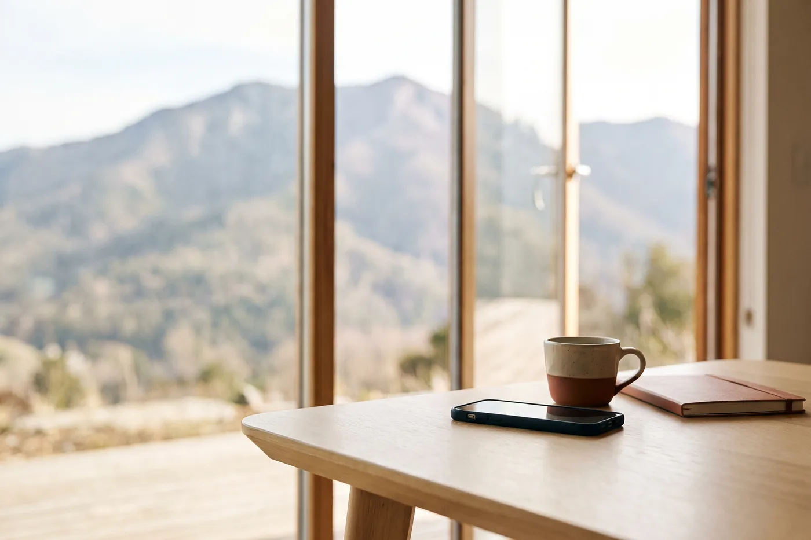

Essentiel
Vous vous soignez surtout en Suisse et vous prévoyez des lunettes ou quelques séances d’ostéopathie.
- Soins courants150 %
- Dentaire150 %, plafond 900 €
- Optique125 €
- En SuisseQuote-part remboursée à 100 %
39 €par mois
L’assurance qui survole la frontière
Un seul contrat vous couvre, que vous releviez de la LAMal ou de la CMU. Votre prix s’affiche immédiatement, sans avoir à laisser votre nom, votre adresse électronique ni votre numéro de téléphone.
Lisez la suite Dès 39 € par mois
0frontaliers résidant en France travaillent en Suisse. Source : Office fédéral de la statistique, premier trimestre 2026.
0restent à votre charge chaque année avec la LAMal : 300 CHF de franchise et jusqu’à 700 CHF de quote-part.
0 €de frais de dossier. Vous n’avez ni conseiller à rappeler, ni questionnaire médical à remplir.
Trois réglages suffisent et le prix s’affiche. Vous ne remplissez aucun formulaire et vous ne laissez aucune coordonnée pour obtenir un chiffre.
Trois formules, pas six niveaux. Chacune indique ce qu’elle rembourse en France et en Suisse. Nous vous disons laquelle suffit, et il nous arrive de conseiller la plus simple.
Vous signez électroniquement, sans questionnaire médical, sans rendez-vous et sans pièce à joindre. Votre couverture démarre à la date d’effet que vous avez choisie, des deux côtés de la frontière.
Vous vous soignez surtout en Suisse et vous prévoyez des lunettes ou quelques séances d’ostéopathie.
39 €par mois
Vous vous soignez des deux côtés de la frontière, avec vos enfants, et vous prévoyez des soins dentaires.
49 €par mois
Vous prévoyez une prothèse dans l’année, des verres complexes ou un traitement d’orthodontie.
59 €par mois
Prix tout compris : il n’y a ni frais de dossier, ni droit d’entrée, ni cotisation d’association. En couple, le second adulte bénéficie d’une réduction de 10 %, et vos enfants d’une réduction de 50 % à partir du troisième. Maquette de travail : les garanties et les tarifs restent à confirmer avec l’assureur.
Que vous soyez affilié à la LAMal suisse ou à la CMU française, le contrat s’ajuste à votre situation sans que vous ayez à changer quoi que ce soit.
En Suisse, vous réglez la facture, votre caisse rembourse sa part, puis nous complétons en euros au taux du jour.
Notre assistant connaît les trois formules, ce qu’elles remboursent des deux côtés de la frontière et ce qui reste à votre charge. Il répond en quelques secondes, il cite les montants qu’il a calculés, et il vous dit franchement quand il ne sait pas.
L’assistant vous informe, il ne vous engage pas : le devis qui vous est remis avant l’adhésion fait foi. N’écrivez ici ni facture, ni décompte, ni donnée de santé.
Cette conversation demande JavaScript. Sans lui, écrivez à l’équipe, dont l’adresse figure en pied de page.
Vous n’avez aucune pièce à fournir avant de signer, ni de carte Vitale à envoyer : votre numéro de sécurité sociale suffit.
Commencer mon adhésion
Vous n’avez qu’une pièce à fournir, et c’est après la signature : un justificatif de votre statut de frontalier, que vous photographiez avec votre téléphone. Le délai de renonciation est de 14 jours et s’exerce en ligne.